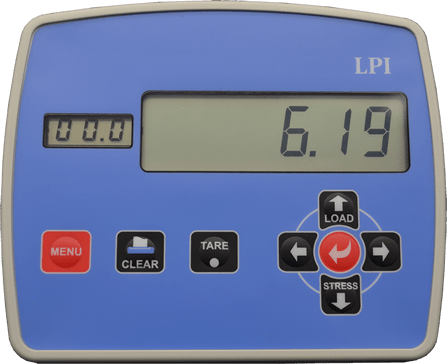
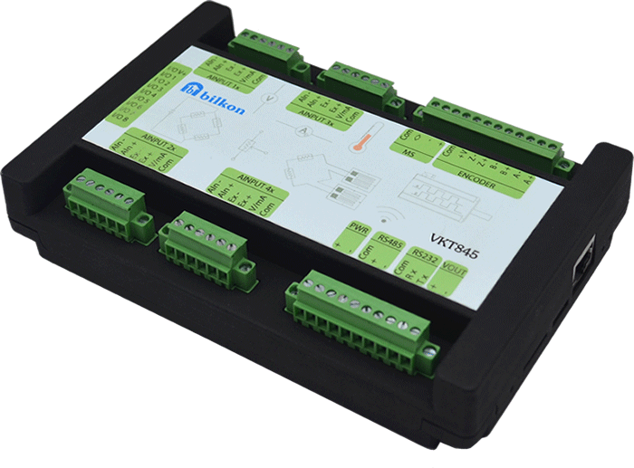
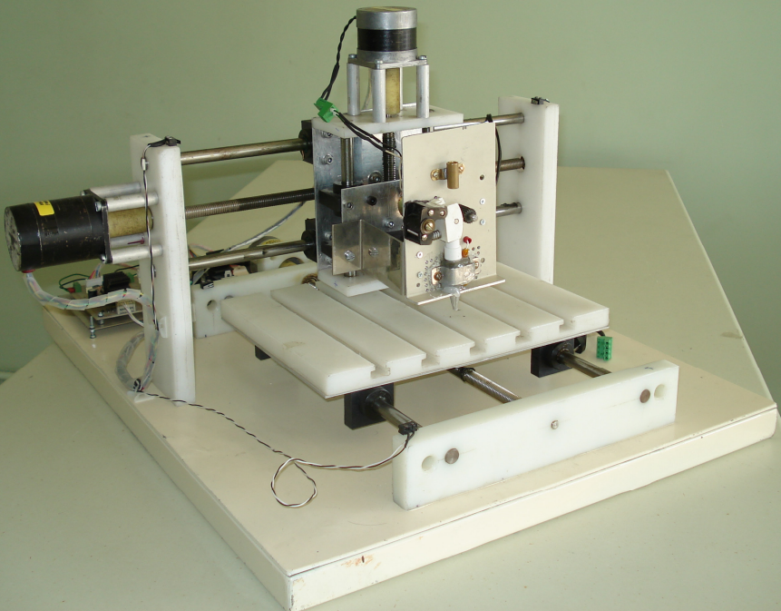

AHMET CIHAN AKINCA
Electrical-Electronics Engineer, MSc

Welcome to my professional portfolio. Here, I present a selection of my projects in embedded systems, firmware development and software engineering. Below are some examples of my work;
Embedded Devices
During my tenure at Bilkon spanning nearly two decades, I have had the opportunity to contribute to a wide range of projects. Below is a selection of some recent projects that reflect my commitment to delivering practical and efficient solutions in embedded systems and firmware development.
1- TMC742 Industrial Controller
- Overview: TMC742 is a high-performance computing device designed for advanced industrial applications. It features two main parts: a Controller Unit based on an STM32 microprocessor and an HMI (Human-Machine Interface) Unit based on an NXP i.MX processor. This setup provides both robust control capabilities and user-friendly interaction, supporting complex automation tasks.
- Controller Unit: Designed for motor control, sensor readings and real-time operations.
- Firmware Development: Crafted in C for bare metal implementation.
- Peripherals: Integrated multiple components including four ADCs, a DAC, RS232, RS485, SPI, I2C, 24 volt I/Os, a Servo Motor Drive and an Encoder reader unit.
- Display Unit: Allows operators to easily configure system settings and monitor operational data, enhancing control and efficiency.
- Operating System: Developed a custom embedded system using Yocto, which included configuring u-boot, the kernel and the filesystem.
- Peripherals: Incorporated a 7-inch TFT display, touchscreen, Ethernet, USB and RS232.
- GUI: Developed multiple user interfaces for various applications using C++ and Qt, enhancing functionality and user interaction.
- Achievements:
- Global Adoption and Impact: The TMC742 industrial controller is successfully integrated into material testing systems worldwide. Renowned companies like Utest, Liya, and Hira utilize this device in their systems, demonstrating its global acceptance and effectiveness in real-world applications.
- Enhanced System Reliability and Efficiency: Through advanced firmware and system design, the TMC742 has significantly improved the reliability and efficiency of testing systems. It delivers precise control and robust performance, critical in minimizing downtime and enhancing operational productivity in industrial settings.
- Versatility in Application: The TMC742's design enables it to support a wide range of testing procedures, from geotechnical testing to complex material analysis. This versatility makes it an indispensable tool for companies specializing in diverse testing scenarios.
- Innovative User Interface Development: The development of user-friendly interfaces using C++ and Qt for the TMC742's HMI unit has greatly improved user interaction. These interfaces allow operators to easily configure system settings and monitor operational data, thereby streamlining workflows and increasing user satisfaction.
- Technological Advancements in Hardware Integration: The integration of sophisticated peripherals such as a 7-inch TFT display, touchscreen capabilities, and extensive connectivity options (Ethernet, USB, RS232) has positioned the TMC742 as a cutting-edge solution in the industrial automation and testing industries.

More details can be found on Bilkon's TMC742
An application example from UTEST's Automatic Consolidation Test.
2- LC826 Industrial Process Controller
- OverviewThe LC826 is a robust process control unit designed for diverse industrial applications requiring precise measurement and control. As the lead firmware developer, I engineered the device's software, ensuring it functions efficiently across various testing and process control scenarios.
- Firmware Development
- Programming Language: C (Bare Metal)
- Development Environment: Developed using Eclipse IDE, leveraging Board Support Packages (BSPs) from ST for efficient low-level hardware interaction and real-time performance on the STM32F746VET microprocessor.
- Main Responsibilities:
- Real-Time Data Handling: Implemented algorithms for the real-time display of process variables such as weight, force, elongation, and pressure.
- Load and Stress Measurement: Developed methods for accurate load and stress measurements essential in universal testing machines.
- Control Algorithms: Created control systems for hydraulic compression, tensile, and bending test machines, focusing on responsiveness and reliability.
- Peripherals
- Displays: 2x16 monochrome LCD, 6-digit Seven Segment Display.
- Communication Interfaces: Ethernet, RS485, and RS232 for versatile networking and device communication.
- User Interface: 7 switch buttons (keypad) and 5 LEDs for status indication and manual controls.
- Analog to Digital Converter: High-precision 24-bit ADC for accurate sensor data acquisition.
- Additional I/Os: DAC for analog control, I2C and SPI for sensor and peripheral integration, 24-volt inputs for external triggers, and 24-volt relay outputs for actuating external devices.
- Achievements
- Device Flexibility: My firmware allows the LC826 to easily switch between different uses, supporting a wide variety of industrial needs. This includes testing for force and elongation in labs and handling complex tasks in factories.
- Precision and Reliability: The software I developed improves how accurately the device measures and controls processes, which greatly reduces mistakes and downtime. This is especially important in controlling the mix and processing of materials in concrete and asphalt plants.
- Wide Application Range: The firmware makes the LC826 useful for many different types of industries. It is versatile enough to automate both the packaging and filling processes, handling liquids and solids efficiently. It also supports machines used to test different materials in manufacturing.

More details can be found on Bilkon's LC826
3- Asi210 Industrial Weight Indicator
- Overview: Asi210 is a highly customizable industrial weight indicator designed for precise weight measurements in various industrial environments. As the lead firmware developer, I crafted software that maximizes performance across diverse operational scenarios.
- Firmware Development
- Programming Language: C (Bare Metal)
- Development Environment: Developed using Eclipse IDE, leveraging Board Support Packages (BSPs) from ST for efficient low-level hardware interaction and real-time performance on the STM32F030 microprocessor.
- Main Responsibilities:
- Real-Time Data Display: Implemented algorithms for the real-time display of process variables such as weight and load.
- Process Automation and Communication: Engineered software solutions for automating operations in applications such as bagging, blending, and filling systems. Developed a communication protocol compatible with Modbus-RTU for seamless integration with PLC systems.
- Peripherals: RS485, 6-digit Seven Segment Display, 4 keypad and LED status indicators, High-precision ADC for accurate weight measurements. DAC for analog control, I2C and SPI for sensor and peripheral integration.
- Achievements
- Enhanced System Accuracy: My firmware significantly enhances the accuracy and reliability of weight measurements, ensuring precise control over industrial processes.
- Adaptability in Use: Supports multiple industrial applications, making the Asi210 a versatile choice for industries looking to integrate sophisticated control systems.
- User-Centric Design: Focused on creating an intuitive user interface, greatly simplifying the setup and calibration processes, thereby improving user experience and operational efficiency.

More details can be found on Bilkon's Asi210
4- LPI Portable Process Controller
- Overview: LPI is a compact, portable process controller tailored for diverse measurement and control applications across industrial sectors. As the lead firmware developer, I implemented robust software solutions to facilitate precise control and monitoring tasks.
- Firmware Development
- Programming Language: C (Bare Metal)
- Development Environment: Utilized Eclipse IDE, capitalizing on Board Support Packages (BSPs) from ST for direct hardware interaction, ensuring optimal performance of the STM32F446 microprocessor.
- Main Responsibilities: Crafted algorithms to accurately handle data from a variety of sensors and inputs. Developed software for comprehensive control of connected peripherals via user-defined parameters. Engineered a user-friendly interface using a Character Display Module and multiple status LEDs for straightforward operation and status reporting.
- Peripherals: PCF21xxC family LCD driver with 7-Segment character display, RS232, RS485, 8-key keypad, 24-bit ADC, 16-bit DAC, RTC, any serial printer
- Achievements
- Enhanced Portability and Versatility: My firmware adaptations have enabled the LPI to perform reliably in various environmental conditions, proving essential for field applications requiring mobility and flexibility.
- Improved Measurement Precision: The firmware significantly enhances the accuracy and reliability of data measurements, crucial for maintaining process integrity.
- Expanded Application Range: Firmware supports diverse operational modes, making the LPI a versatile tool for industries requiring portable and precise control solutions.

More details can be found on Bilkon's LPI
5- VKT845 Multi-Channel Datalogger
- Overview: VKT845 is a multi-channel datalogger that excels in high-performance data collection applications, providing reliable, stable, and accurate logging capabilities. It is designed for versatile data acquisition, ideal for field applications due to its low power consumption.
- Peripherals:
- Processor: STM32H730VBT6
- ADCs: Four 24-bit ADCs for precise analog input measurement.
- Communication Interfaces: Ethernet, RS232, RS485, USB for comprehensive connectivity options.
- Additional Inputs: Supports strain gauges, load cells, extensometers, LVDTs, transducers, 0-10VDC, 4-20mA signals, thermocouples, and a single channel for 2-4 wire RTD (e.g., Pt100, Pt1000) and encoder inputs up to 1MHz.
- Output Options: General purpose 24 Volt I/Os, programmable for various applications.
- Achievements:
- High-Performance Data Handling: Engineered to capture and process multiple input types simultaneously with options for automatic or adjustable gain, providing 19-bit resolution dependent on the sampling rate.
- Versatile Data Communication: Instantly transmits both raw and processed data wirelessly or via wired connections, and saves to SD card for real-time or later use. The system allows for easy data transfer to master devices in formats like Excel.

More details can be found on Bilkon's VKT845
Process Control & Automation
6- Material Test Systems Automation
- Compression and Flexural Testing Machines: Automating standard and advanced testing procedures.
- Soil Mechanics Testing Machines: Including Automatic Consolidation Testing and Direct Shear Tests.
- Asphalt Testing Machines: Development for CBR, Marshall, and Asphalt Binder Analysis systems.
- Universal Testing Machines: Specializing in Electromechanical, Hydraulic, and Servo-Hydraulic configurations for diverse materials testing.
Utilizing the TMC742 controller, I developed process control software for material testing systems, targeting both embedded Linux and Windows/Linux PC environments. This software was crafted using C++ and the Qt graphics library. My focus included automating various testing processes across multiple machine types:
Press testing machine in action;
Marshall asphalt testing machine;
Direct Shearing testing machine;
7- Automation and Process Control Projects
- Overview: Throughout my tenure at Bilkon, I specialized in developing firmware and process control software for highly automated industrial systems, including concrete plants, asphalt plants, dosing, filling and bagging systems. Utilizing TMC742 and LC826 controllers along with Asi210 weight measurement units, I engineered solutions that surpass traditional PLC systems in efficiency and performance.
- Key Contributions
- Advanced Control Systems Development:
- Hardware Utilized: Integrated TMC742 and LC826 controllers for core system management with Asi210 units for precise weight measurements.
- Software Implemented: Developed robust process control software capable of running on embedded Linux platforms or directly from bootable systems via Ethernet.
- Functionality: Engineered software to manage material handling from multiple silos, control motor operations, and automate the sequential actions of conveyors and gates, ensuring seamless production workflows.
- SCADA Software Engineering:
- Technologies Used: Leveraged C, C++ and Qt graphics library to create scalable and reliable SCADA systems that monitor, control and optimize the operations of extensive industrial automation landscapes.
- Operational Excellence: Designed systems to perform continuous and unattended operation, enhancing process reliability and reducing the need for manual intervention.
- Achievements
- Enhanced System Efficiency: My control systems provided more targeted and effective management of complex industrial operations, proving superior to traditional PLC-based approaches.
- Customized Automation Solutions: Tailored software solutions met the specific needs of each plant's operational requirements, leading to significant improvements in resource management and operational throughput.
- Reliable and Long-term Operation: Developed systems renowned for their durability and reliability, capable of sustaining long-term, uninterrupted automation for industrial processes.
8- Custom Engineering Projects
- A Camera-Controlled Two-Axis Turret-Gun System Prototype
- Elevator Cabin Door Control System
- Process Control for Autoclave Vacuum Sterilizer Machine
- Shotcrete Pump Truck Automation
- Integrated LED and Water Animation Projects
- Cold Compression Strength Test Machine Automation
- Control System: Utilized the TMC742 for comprehensive control and data handling. Developed firmware in C for the TMC742 to manage automation processes efficiently.
- Sensors and Actuators: Integrated multiple sensors including load sensors, position encoders, and angle sensors. Also managed a stepper motor, relays for pneumatic cleaning of pellet residues, and a vibration motor to ensure seamless operation and maintenance.
- User Interface and Connectivity: Crafted a user-friendly GUI using C++ and Qt, facilitating easy interaction and data visualization. The system could transmit data to PCs and printers via Ethernet, supporting effective data management and reporting.
- Software Development: Wrote firmware for our stepper motor driver card and the TMC742 controller in C, ensuring robust and reliable performance across all device operations.
- Features adjustable compression speeds and a vibrating pot feeder for bulk input, enhancing testing efficiency.
- Operates in both manual and automated modes, offering flexibility for standard testing and research applications.
- Delivers precise test data visualization and printing in kilograms with a resolution of 1 kg.
I developed a prototype to repurpose an idle military helicopter's turret-gun system for ground-based operations, commissioned by the 5th Main Maintenance Factory Directorate in Ankara. The turret-gun, repurposed and mounted on a trailer, was engineered to be controlled by a joystick manipulating a camera for target acquisition. As the camera moved to lock onto a target, the gun barrel aligned synchronously. This project integrated three TMC742 controllers and two Delta ASDA-B2 model servo drivers, enabling precise movement and control. The camera movement, coordinated in global coordinates, was driven by two stepper motor driver cards. I utilized OpenCV libraries for image processing on the PC application, C++ and Qt for the embedded software on the TMC742s, and C for programming the stepper motor driver hardware and low-level TMC742 operations.
For YenerSAN Elevator Company based in Ankara, we engineered a sophisticated elevator door control system that manages various functionalities. This system controlled a DC motor driver card to operate the doors, incorporating features such as adjustable door speed, photocell detection, and jam detection. We developed a control card, a DC motor driver card, and a battery-operated remote control device that could upload settings directly to the control card via a serial port. I handled the development of all associated hardware and software, using C to ensure robust and reliable system performance.
I led the automation of an autoclave unit for Ekol Medikal using our LC826 industrial control device. The autoclave process required several critical steps: creating a vacuum, heating, maintaining specific temperature and pressure levels, injecting ethylene oxide gas, and removing the gas through a water-sealed vacuum. Our control system was crucial in managing these processes, ensuring precise control and reliable operation throughout the sterilization procedure.
For Titan Makina, I implemented an advanced automation system for their shotcrete pump trucks using our LC826 control devices. This project involved the development and integration of specialized software and hardware that enhanced the operational efficiency and reliability of the concrete pumping process, ensuring precise control over the shotcrete delivery and application.
For BLT Company, we developed a suite of electronic devices and software tailored for light water animations, enhancing their visual and interactive entertainment systems. This comprehensive project included creating strip LEDs, block LEDs, addressable spot LED drivers, DC motor drivers for pumps, and stepper motor drivers for dynamically moving fountains. These systems were integrated with Sunlite DMX control software, a popular choice for light music fountain entertainment systems. I was responsible for developing the software for driver and communication cards designed for LED-based lighting systems, focusing on lighting, animation, and screen interfaces. Additionally, I engineered embedded software and application software, and developed a two-axis spherical electromechanical system specifically designed to enrich illuminated water animations. This integration ensures seamless operation and synchronization across all hardware and software components, adhering to industry standards for performance and quality.
Overview: I led the enhancement of a Cold Compression Strength Test Machine using the TMC742 controller, aligning with ISO4700, ASTM E 382, and IS8625 standards. This fully automated system measures the crushing strength of iron ore pellets by precisely monitoring sample dimensions and loads.
Technical Implementation:
Capabilities:
This project significantly advanced the operational capabilities of the testing machine, providing reliable, automated control over complex testing procedures and data management.
Personal Projects
9- Rotary Inverted Pendulum Stabilization
- GUI Software: Manages user interaction and visualizes the pendulum’s behavior in real-time. View on GitHub
- Control Board Software: Processes the encoder feedback to dynamically adjust the pendulum’s position. View on GitHub
- Stepper Motor Driver Software: Directly controls the stepper motor based on the commands from the control board. View on GitHub
This project was undertaken to analyze and compare the effectiveness of PID and LQR control strategies in stabilizing a rotary inverted pendulum. I constructed the pendulum setup using available mechanical components, and the rotational movement was facilitated by a stepper motor. Position feedback was captured through a 4096-resolution encoder, forming the basis for real-time control adjustments.
The control architecture comprised a PC program, a control card, and a stepper motor driver, establishing a comprehensive system from user interface down to hardware control. Below is a video demonstration of the pendulum in action, showcasing the dynamic response of the system to control inputs.
The software for this project is divided into three distinct parts, each available on my GitHub for review:
This project not only demonstrates my ability to implement complex control systems but also serves as a practical exploration of advanced control theories applied to a dynamic system.
10- Development of a Low-Cost Rapid Prototyping CNC System
- Overview: My master's thesis project at Hacettepe University involved the development of a cost-effective CNC system tailored for rapid prototyping and instrumentation applications. This system was designed to create prototypes using Fused Deposition Modeling (FDM), offering a viable solution with reasonable equipment costs.
- System Design: The CNC machine consisted of three axes for multi-directional movement and an additional head for dispensing thermoplastic material. Utilizing stepper motors and a DC motor for precision control, the system achieved accurate material deposition.
- Software Development: The project featured dual software implementations for simulation and real-time control. I developed PC software for system monitoring and control, alongside microcontroller software to manage operational commands directly. This included integration with stepper motor drivers for dynamic system response.
- Capabilities: Designed to support a variety of prototyping tasks, the system could generate prototypes from electronic designs to scaled models, using a sophisticated interface for control and customization. It supported both manual and automated operations, enabling it to function as both a research tool and a practical device for rapid prototyping.
- Thesis Significance:The project underscored the feasibility of deploying advanced manufacturing technologies in cost-restricted environments, highlighting the potential for innovative design and manufacturing approaches in engineering education. Download my full thesis (PDF)

11 - Artificial Neural Network Projects for Visual Recognition and Object Tracking
- Project Overview: I developed software for hand recognition, face recognition and object tracking entirely from scratch, employing Artificial Neural Networks (ANNs) without the aid of pre-built toolkits or APIs.
- Custom ANN Development: Crafted unique libraries for image processing and neural network training, ensuring a deep level of customization and optimization.
- Software Tools: Utilized C++ for application development, Qt for GUI, and OpenCV for image and video processing, enhancing the interface and usability of the applications.
- ANN Architecture: Engineered multiple neural network structures, including a complex model with layers configured as 1200x128x32x32x32x128x6 neurons, focusing on efficient learning and performance.
- Key Innovations:
- Real-Time Object Tracking: Developed algorithms for real-time prediction of object positions in x-y coordinates, showcased in project videos and available for review on GitHub.
- Face Recognition and Hand Detection: Implemented systems capable of identifying and tracking facial features and hand gestures.
- Algorithmic Strategies: Combined genetic algorithms and backpropagation for training, comparing their efficiency and resource usage to optimize learning speeds and system requirements.
- Research and Comparisons:
- Algorithm Efficiency: Analyzed the performance differences between genetic algorithms and backpropagation, noting the trade-offs in learning time and memory usage.
- Activation Function Evaluation: Explored various activation functions such as sigmoid, tanh, identity, atan, softplus, ReLU to determine the most effective for the application, emphasizing the impact on learning speed and sensitivity.
- Documentation and Learning:
- Project Videos:
- Source Code: Complete development process transparent through comprehensive code repositories available on
GitHub for ANN
GitHub for Hand Recognition - Read detailed discussions on the mathematical foundations and practical implications of neural networks on my blog;
UNDERSTANDING ARTIFICIAL NEURAL NETWORKS
Recognizing hand gestures;
Real-time object tracking;
Face recognition;